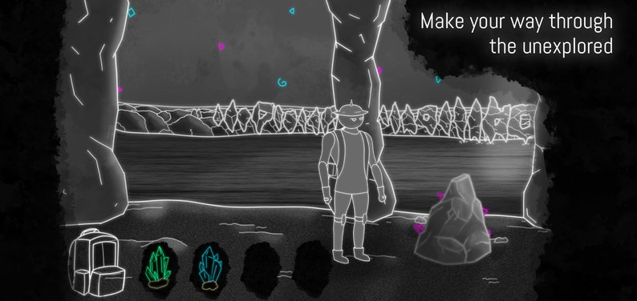
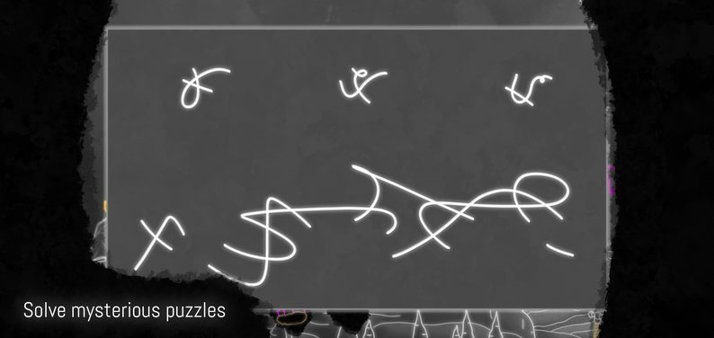

Puzzle / Point & Click · My First Unity Project
An atmospheric point-and-click exploration game set inside a cave, inspired by the real Mira de Aire caves in Portugal. Walk through the dark, collect valuable minerals, and puzzle your way deeper in.


My first project in Unity, and my first time building anything as part of a small team rather than solo. You play as an explorer making your way through a cave system, walking and interacting with the world through left-click movement and right-click interaction, collecting minerals and working through hand-drawn puzzles standing between you and the next stretch of cave. The whole thing leans on its sketchy, monochrome art style to sell the sense of somewhere half-lit and unfamiliar.
Design: Fábio D'Almeida · Programming: Xavier Lopes · Art: Rui Lopes